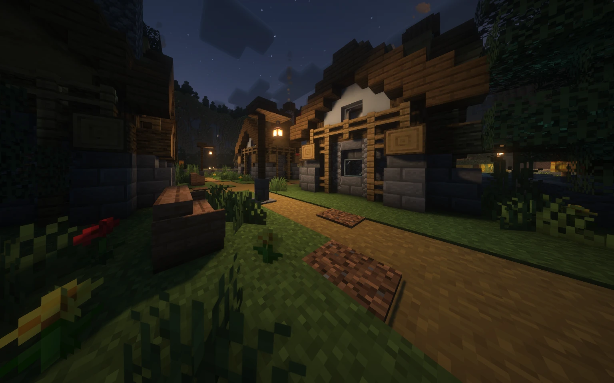

Köyü kurtar
Kurtlar ve bağımsız oyuncular elendiğinde köy takımı kazanır. Yanlış bir oylama, bilgi ve koruma rollerini kendi elinle kaybetmene neden olabilir.
Köye gece çöktüğünde herkesin bir sırrı var. Rolünü öğren, ipuçlarını birleştir ve gündüz oylamasında doğru kişiyi seç. Bazen en iyi dostun bile bir kurt olabilir.

Bu bir hayatta kalma yarışından çok, doğru kişiye güvenme oyunu. Özel gücün kadar ne zaman konuştuğun, kimi koruduğun ve kime oy verdiğin de önemli.
Maç başında roller rastgele dağıtılır ve oyuncular evlerine yerleşir. Takımını, yeteneğini ve varsa sınırlı kullanım hakkını öğren; rolünü herkese açıklamak zorunda değilsin.
Evine dön ve sıran geldiğinde rolünün yeteneğini kullan. Kimi roller korur, kimi bilgi toplar, kimi avlanır. Gece herkes serbestçe dolaşamaz; sana verilen yönlendirmeleri takip et.
Sabah gece yaşananlar ortaya çıkar. Bildiklerini paylaş, iddiaları karşılaştır ve oylamada şüphelendiğin oyuncuyu seç. Her elemeden sonra hayatta kalan takımlara göre oyun devam eder veya sonuçlanır.
Roller oyuncu sayısına göre dağıtılır; her maçta tüm roller bulunmaz. Özel yeteneği olmayan Köylü de tartışma ve oylamayla oyunun kaderini değiştirebilir.
Bilgiyi birleştir, masumları koru ve köyün içindeki tehditleri bul.
Özel bir yeteneğin yok; ama oyunun en önemli araçlarına sahipsin: gözlem, konuşma ve oy. Çelişkileri yakala, bilgi veren rolleri dinle ve köyün doğru kişiyi elemesine yardımcı ol.
Unutma: Gece evinde kalırsın. Sessiz bir oyuncu olmak masum olduğun anlamına gelmez.
Her gece bir oyuncuyu korumaya alırsın. Koruman kurt saldırısını engelleyebilir ve gecenin sonunda uygulanan zehir saldırısına karşı da işe yarar.
Sınır: Koruma, her ölüm türüne karşı dokunulmazlık vermez. Kundakçının ateşi korumayı aşar.
Bir koruma, bir öldürme iksirin vardır. Koruma iksiri seçtiğin oyuncuya yönelen kurt saldırısını engeller; öldürme iksiriyle bir hedefi zehirlersin.
Sınır: İlk gece öldürme iksiri kullanılamaz. İksir haklarını dikkatli harca; koruma hedefi saldırıya uğramazsa koruma iksiri geri verilir.
Gece bir oyuncuyu ziyaret edip onun evinde kalabilirsin. Kurtlar o evde sana saldırırsa saldırının kurbanı sen olursun; ev sahibi yerine kendini feda edebilirsin.
Risk: Bir kurdun veya Kundakçının evini ziyaret etmek ölümcüldür. Ziyaret ettiğin ev sahibi gece ölürse sen de elenirsin.
Aura Gözcüsü, Kumarbaz veya Medyum ölünce onun rolünü ve topladığı bilgileri devralırsın. O zamana kadar Köylü gibi tartışmaya ve oylamaya katılırsın.
Dikkat: Devraldığın rolün yetenek ve sınırları senin için de geçerlidir. Her ölen oyuncunun rolünü alamazsın.
Bir oyuncu seçip köy, kurt veya bağımsız takımından hangisinde olduğunu tahmin edersin. Sonucu sabah öğrenirsin; yanlış tahminde hedefin gerçek takımı da gösterilir.
Sınır: Oyun boyunca yalnızca iki kez köy takımı tahmini yapabilirsin. Her gece tek bir seçim hakkın vardır.
Her gece bir oyuncuyu inceleyip doğrudan rolünü öğrenirsin. Elde ettiğin bilgi, köyün iddiaları doğrulamasına ve gizlenen tehlikeleri bulmasına yardımcı olur.
Sınır: Gecede tek bir oyuncuyu araştırırsın. Bilgini ne zaman açıklayacağını seç; kendini açık hedef hâline getirme.
Gece ölü oyuncularla konuşabilir, geride kalan bilgileri dinleyebilirsin. Oyun boyunca bir kez ölmüş bir köy oyuncusunu gecenin sonunda canlandırabilirsin.
Sınır: Canlandırma tek kullanımlıktır ve yalnızca köy takımına uygulanır.
Gündüz bir oyuncuyu hapse alırsın. Gece mahkûmla özel olarak konuşabilir veya infaz hakkını kullanabilirsin. Hapishane, mahkûmu kurt saldırısından korur.
Sınır: Bir infaz hakkın vardır. Hapiste olmak bütün ölüm türlerine karşı dokunulmazlık sağlamaz.
İki merminle şüphelendiğin oyuncuları doğrudan eleyebilirsin. İlk atışından sonra rolün bütün köye açıklanır.
Sınır: İlk gün ateş edemezsin ve aynı gün en fazla bir atış yapabilirsin. Yanlış hedef seçmek köyün gücünü azaltır.
Zemzem suyunu bir oyuncu üzerinde kullanırsın. Hedef bir kurt veya Kundakçıysa o elenir; başka bir rol seçersen sen elenirsin.
Risk: Tek hakkın vardır. Bu yetenek güvenli bir araştırma değil, sonucu ölümcül olabilen bir karardır.
Takım arkadaşlarınla hareket et, köyün güvenini kazan ve gecenin hedefini belirle.
Kurtların gece saldırısında hedef seçer ve avlanırsın. Diğer kurtlarla aynı hedefte buluşmak takımının planını güçlendirir.
Dikkat: Doktor, Cadı veya hapishane koruması saldırıyı engelleyebilir. Her oyuncu kurtların serbest hedefi değildir.
Gece avına katılırsın. Gündüz gölge yeteneğini kullanarak o turun oylarını gizler ve kurt oylarını iki kat değerli hâle getirirsin.
Sınır: Gölge yeteneği oyun boyunca yalnızca bir kez kullanılabilir. Zamanlaman oylamanın sonucunu değiştirebilir.
Her gece iki farklı oyuncuyu seçip rol kategorilerini öğrenirsin. Tam rol yerine koruma, bilgi veya katil gibi kategoriler üzerinden takımına yol gösterirsin.
Dönüşüm: Hayatta kalan son kurt olduğunda Düz Kurt'a dönüşür ve avlanma görevini üstlenirsin.
Her gece bir oyuncunun tam rolünü öğrenirsin. Köyün güçlü rollerini bulup kurt takımının sonraki hamlesini planlamasına yardımcı olursun.
Dönüşüm: Hayatta kalan son kurt olduğunda Düz Kurt'a dönüşürsün.
Ne köyün ne kurtların planı: kendi kazanma koşulunun peşindesin.
Gece ya bir oyuncuya benzin döker ya da daha önce benzin döktüğün oyuncuları yakarsın. Amacın diğer bütün oyuncuları eleyip tek başına hayatta kalmaktır.
Özelliği: Yakma saldırısı gece korumalarını aşar. Benzin dökmek ve yakmak aynı hamle değildir; doğru geceyi bekle.
Hedefin hayatta kalmak değil, köyün seni oylamayla idam etmesini sağlamaktır. İdam edilirsen oyun senin galibiyetinle sona erer; başka şekilde ölmek aynı sonucu vermez.
Katılım: Soytarı mevcut otomatik maç dağılımında bulunmaz; özel rol dağılımı kullanılan maçların rolüdür.
Kurtlar ve bağımsız oyuncular elendiğinde köy takımı kazanır. Yanlış bir oylama, bilgi ve koruma rollerini kendi elinle kaybetmene neden olabilir.
Hayatta kalan kurtların sayısı, diğer bütün yaşayan oyuncuların toplamına eşit veya daha fazla olduğunda kurt takımı kazanır.
Kundakçı herkes elendikten sonra tek başına kalırsa kazanır. Soytarının yer aldığı özel maçlarda ise oylamayla idam edilmesi oyunu onun lehine bitirir.
Ana lobide oyununu seç. Rob's Village lobisindeki pusula veya /rv menu ile oyun menüsünü aç; oyuncu ya da seyirci olarak bekleyebilirsin.
En az 6 oyuncu olduğunda geri sayım başlar. Oyuncu sayısı arttıkça bekleme süresi kısalır; 6'nın altına düşerse başlangıç iptal edilir.
Maç öncesi 10 saniyelik harita oylaması açılır. Oy verilmezse hazır haritalardan biri rastgele seçilir; en çok oyu alan haritalar eşitse aralarından rastgele seçim yapılır.
Öldükten sonra yaşayanlara bilgi taşıma; Discord veya özel mesajlarla rolleri ifşa etme. Medyumun ölülerle konuşma yeteneği, oyunun kendi kuralları içindeki istisnadır.
Sunucu kurallarıHayır. Roller maç başında oyunculara rastgele dağıtılır. Oyuncu sayısına göre rol havuzu değiştiği için her maçta aynı roller bulunmaz.
Gece, rollerin sırasıyla hamle yaptığı aşamadır. Her oyuncunun dolaşma veya yetenek kullanma zamanı aynı değildir. Evine dönüş ve hedef seçimi için oyun içi yönlendirmeleri takip et.
Maçın kalanını yaşayanlara bilgi vermeden takip edebilirsin. Medyum rolü varsa ölü bir köy oyuncusunu bir kez canlandırabilir. Maç sonunda sonuçlar gösterilir ve oyuncular yeniden lobiye alınır.
Devam eden maça oyuncu olarak eklenmezsin. Lobide bekleyip bir sonraki maça katılabilirsin.
Yaşayan bir oyuncunun geri dönmek için 90 saniyelik süresi vardır. Bu süre içinde yeniden bağlanamazsan oyundan elenirsin; çıkış yapmak maçı durdurmaz.
Lobide pusulayı veya /rv menu komutunu kullan. /rv maps harita kataloğunu, /rv vote aktif gündüz oyuncu oylamasını açar. /rv spectate lobide oyuncu ve seyirci durumunu değiştirir.
Etkinlik saatleri ve topluluk oyunları Discord'da duyurulur. Sunucunun açık olup olmadığını canlı durum sayfasından görebilirsin.